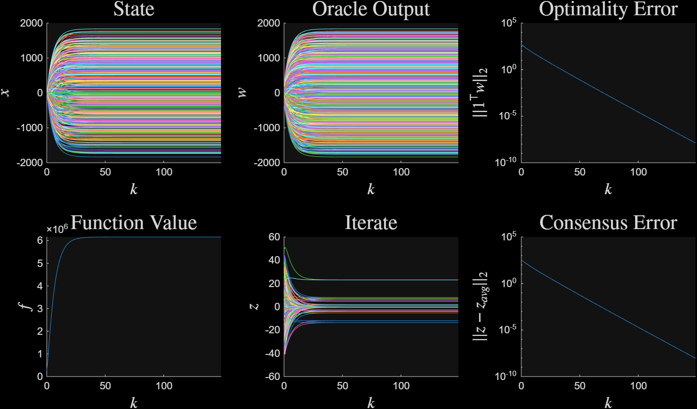
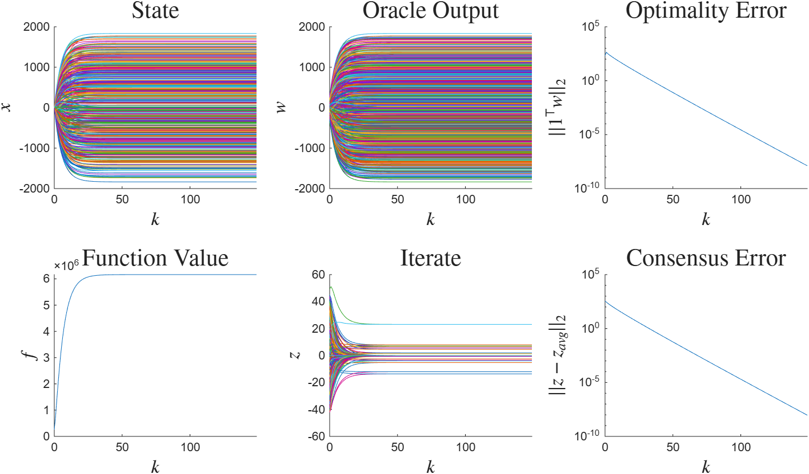

Get Started#
Installation#
opt-syn may be downloaded from github.
It is tested for MATLAB versions \(\geq\) 2024a.
Workflow#
Analysis and Synthesis follow similar workflows:
Define the class of functions/operators in the optimization/inclusion problem.
Specify the algorithm (analysis), or the network interfacing the operators (synthesis)
Choose the order of the certification (higher order: better bounds, more expensive)
Solve the profiling problem
Validate the solution, and plot sample trajectories
Optimization Example Setup#
A constrained optimization problem of minimizing a function \(f\) subject to a sparse \(L_1\) norm constraint is
The function \(f\) is known to be real-valued, \(m\)-strongly convex, and \(L\)-smooth.
Analysis#
The Projected Gradient Descent (PGD) algorithm with stepsize \(\gamma > 0\) is the iterative procedure
PGD achieves linear convergence at rate \(\rho \in (0, 1)\) if there exists a constant \(C_0 > 0\) such that
The minimal worst-case convergence rate for PGD is \(\frac{L-m}{L+m}\) [1]. This rate is achieved with stepsize parameter \(\gamma = \frac{2}{L+m}\).
Analysis code to numerically verify this rate for parameters \(m = 1, L = 10\) is
1%describe the operators
2m = 1; L = 10;
3rho_theory = (L-m)/(L+m); % 0.8182
4
5op1 = op_sml(m, L); %gradient of f
6op2 = op_pcc(); %subdifferential of L1 norm ball indicator function
7
8%State-space representation of PGD
9gamma = 2/(L + m);
10K = ss(1, [-gamma, -gamma], [1; 1], [0, 0; -gamma, -gamma],1);
11
12%Interconnect the operators with PGD
13sys = opt_system({op1, op2}, [], K);
14
15
16%run the analysis routine, use bisection to minimize the convergence rate
17man = opt_analysis(sys);
18order = {1, 1}; % order of the analysis program
19sol = man.bisect(order);
20rho = sol.rho % 0.8182, matches PGD theory within 4 digits.
A time delay of one time step is introduced before and after evaluation of \(\nabla f\). Analysis of PGD with this time delay dynamics with \(m=1, L= 10\) is
1delay = [1, 0];
2network = bridge_channel_delay(delay, delay);
3sys_delay = opt_system({op1, op2}, network, K);
4man_delay = opt_analysis(sys_delay);
5sol_delay = man_delay.bisect(order); % 1.3744
Convergence is not guaranteed with time-delays, because \(1.3744 > 1\).
Synthesis#
Code to generate an optimization algorithm for \(m=1, L=10\) is
Convergence is confirmed, because the algorithm has a worst-case linear convergence rate of \(0.8676 < 1\).
Synthesis is then performed when the oracle \(\nabla f\) has a delay of one time step before and after evaluation.
%% with time-delay dynamics
delay = [1, 0];
network = bridge_channel_delay(delay, delay);
sys = opt_system({op1, op2}, network);
man = opt_synthesis(sys);
sol_delay = man.bisect(); % 0.9860
Convergence is again confirmed, since \(0.9860 > 1\).
Simulation#
The delay-1 synthesized algorithm is used to solve an \(L_1\)-norm-constrained quadratic program with \(\beta \in \R^{500}\). The code to perform this execution is
Figure 1 tracing out the execution is created using the commands
plt = alg_plotter(ssim);
plt.plot({'x', 'w', 'res_w', 'f', 'z', 'res_z'}, 13)

Figure 1: Execution of delay-1 synthesized algorithm#

Figure 1: Execution of delay-1 synthesized algorithm#